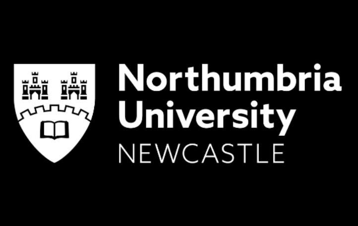

NU Short Term Program
January 2024 — Feburary 2024

During a short-term program at the University of Northumbria, I conducted a project on transparent object localization, which lasted for two weeks. Utilizing PyTorch, I personally developed the model, incorporating the core idea of ResNet into the U-Net architecture and implementing it simply. While the evaluation wasn't outstanding, I gained insights into internal computational processes by addressing issues such as dimension mismatches during model development, which I hadn't been familiar with previously. As a result, I achieved the top position in the short-term project.